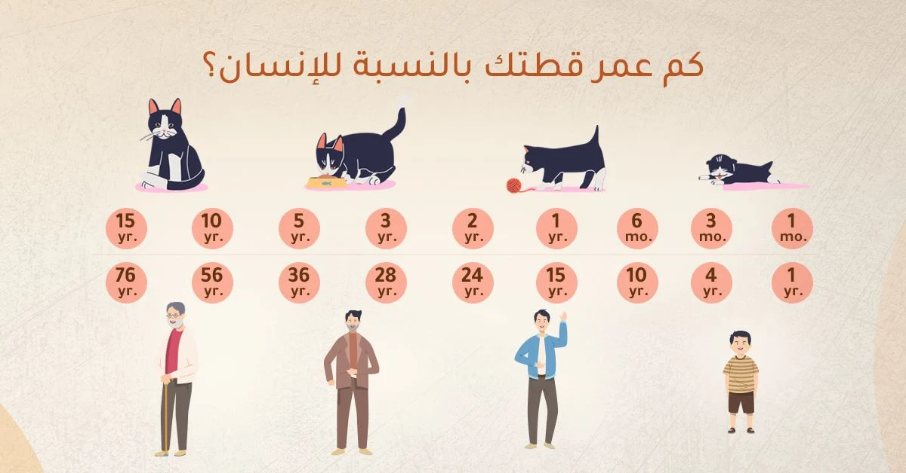

طرق وكيفية العناية بالقطط الكبيرة أو المُسنة
مع تقدم القطط في العمر، تتغير احتياجاتهم الجسدية والسلوكية، وتميل القطط المُسنة إلى أن تكون أقل نشاطًا، وتنام لساعات أطول وغالبًا ما تحتاج القطط المُسنة إلى مزيد من العناية والاهتمام ، وهناك الكثير من الطرق التي يمكنك من خلالها مساعدة قطتك على الاستمرار في التمتع بصحة جيدة وسعيدة.
قبل أن نعدد طرق العناية؛ دعنا نجيب عن عدد من التساؤلات حول القطط الكبيرة بالسن:
متى تصنف القطة مُسنة؟
أي قطة تتجاوز الـ 10 سنوات تصنف مُسنة؛ ومع التحسينات المستمرة في الرعاية البيطرية، أصبح العمر الافتراضي للقطط أطول بكثير مما كان عليه من قبل.
كم عمر قطتي في سنوات الإنسان؟
القطط لا تتقدم في العمر بنفس معدل عمر البشر، موضح لكم في الجدول سنوات الإنسان التي تعادل سنوات القطط.
أهم سبعة طرق لرعاية القطط المسنة:
1-انتبه جيدًا إلى النظام الغذائي لقطتك المسنة
من المهم أكثر من أي وقت مضى أن تتمتع قطتك بوزن صحي للحفاظ على صحتها. تحدث إلى طبيبك البيطري حول كيفية ومتى تحول قطتك إلى طعام القطط المسنة، مثل: ابلاوز طعام جاف للقطط الكبيرة - اكبر من 7 سنوات بالدجاج، سيساعدك طبيبك البيطري في تقييم الوزن الأمثل لقطتك وهل هي بحاجة لزيادة وزنها أو التخفيف منه. وغالبًا ما تقل شهية القطط الكبيرة للطعام؛ لذلك يفضل تقسيم كمية طعام قطتك اليومي إلى وجبات صغيرة متكررة خلال اليوم.
2-زيادة وصول قطتك إلى الماء.
زد من استهلاك قطتك الكبيرة بالسن للمياه من خلال توفير الأطعمة الرطبة والمزيد من الخيارات لمياه الشرب؛ لتجنب الإمساك وأمراض الكلى لأن مع تقدمها في السن تكون أكثر عرضة للإصابة بها، كما أن إضافة نوافير مياه الحيوانات الأليفة خيار جيد لإغراء قطتك بشرب المزيد.
3-جدولة الفحوصات الطبية المنتظمة
تحتاج القطط إلى زيارة الطبيب البيطري في كثير من الأحيان مع تقدمهم في العمر، حتى لو بدت بصحة جيدة. يوصى بإجراء فحص كل 6 أشهر للقطط التي تتراوح أعمارها بين 10 و 15 عامًا وكل 4 أشهر للقطط التي تزيد أعمارها عن 15 عامًا للحفاظ على صحتهم والاكتشاف المبكر للأمراض.
4-تعلم عادات قطتك وانتبه للتغييرات
القطط بارعة في إخفاء المرض ، لذا فإن التغييرات في السلوك قد تشير إلى وجود مشكلة. احتفظ بدفتر يوميات لتتبع سلوك قطتك. هذا سيجعل من السهل تحديد التغيرات في سلوكها. إذا لاحظت تغييرات، مثل النوم أكثر أو الاختباء، فلا تتجاهلها! تحدث مباشرة مع طبيبك البيطري.
5-راقب فضلات قطتك
هل براز قطتك أكثر نعومة أو صلابة أو متغير اللون؟ هل يتغوط يوميًا؟ يمكنك معرفة الكثير عن صحة قطك من فضلاته. لذلك يجب ألا تكون عملية تنظيف صندوق الفضلات عبارة فقط عن التقاط الفضلات ورميها مباشرة في سلة النفايات دون النظر لها.
6-تعرف على علامات مرضها
لا يخفى على أحد أن ليس بمقدرةِ القططِ التعبير كالبشر، لذلك يجب على مُربي ومُربيات القطط معرفة أشهر العلامات الدالة على مرض قططهم لمنع تفاقم المرض. وهي:
- تغير عادات التبول والتبرز فجأة.
- الخمول والنوم لساعات أطول من المعتاد.
- فقدان الوزن أو اكتسابه بشكل سريع
- تغير عادات الأكل والشرب.
- تساقط الشعر وتهيج الجلد.
- رائحة الفم الكريهة.
- تغير مفاجئ في شخصية القط.
7-أنشئ بيئة منزلية صديقة لقطتك الكبيرة بالسن
- سهّل وصولها لاحتياجاتها، مثل: الطعام، والماء، وصندوق الفضلات (الليتربوكس) عبر وضعها في مواقع متعددة.
- وفر أوعية طعام وماء مرتفعة إذا كانت قطتك مصابة بألم في المفاصل حتى لا تضطر إلى الانحناء للأكل والشرب.
- وفر أوعية طعام وماء مرتفعة إذا كانت قطتك مصابة بألم في المفاصل حتى لا تضطر إلى الانحناء للأكل والشرب.
- وفر لها فراشًا ناعمًا في أماكن النوم والراحة المفضلة.